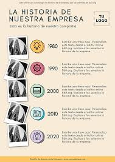

Vision
Nuestra visión es: Convertirnos en la plataforma líder de productos sustentables y ecológicos en la región, impulsando un cambio cultural donde el consumo responsable sea accesible para todos. Aspiramos a consolidar una comunidad consciente que elija activamente proteger el medio ambiente, promoviendo hábitos cotidianos que aseguren un estilo de vida saludable, equilibrado y en perfecta armonía con la naturaleza.

Mision
Nuestra Misión es: Proveer alternativas ecológicas de la más alta calidad que sustituyan de forma efectiva a los productos plásticos y químicos convencionales. Nos dedicamos a seleccionar cuidadosamente cada artículo de nuestro catálogo para garantizar un origen orgánico y sostenible, facilitando a las personas la transición hacia un día a día más verde y limpio, contribuyendo activamente al bienestar de las futuras generaciones.
Historia
EcoMarket nació con la idea de ofrecer alternativas amigables con el planeta. Todo comenzó como un pequeño proyecto local enfocado en inspirar a las personas a realizar cambios simples pero significativos en su rutina diaria. Al notar la enorme cantidad de plásticos de un solo uso en productos de aseo e higiene personal, decidimos crear un espacio centralizado que reuniera soluciones reales, biodegradables y de bajo impacto ambiental. Lo que empezó como una búsqueda personal de bienestar se ha transformado hoy en un catálogo completo que demuestra que cuidar de la Tierra y de nuestra salud es totalmente posible.
